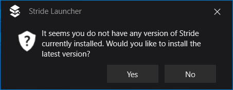
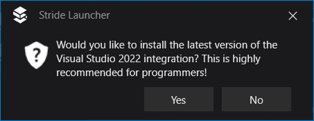
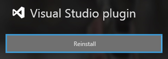
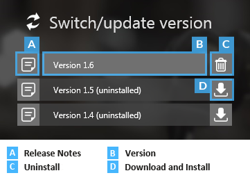
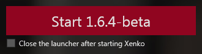
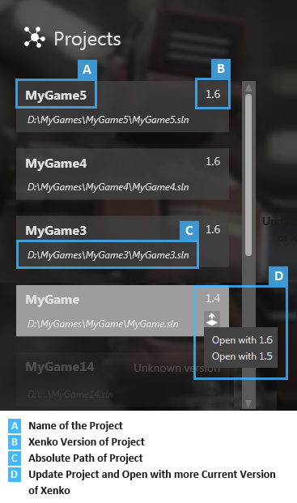

Stride Launcher
Warning
Приносим свои извинения за неудобства. Для этой страницы нет перевода на русский язык. Она будет отображаться на английском языке.
Beginner
With the Stride launcher, you can install, manage and run different versions of Stride.

Install the latest Stride version
If you don't have Stride installed, the Stride Launcher prompts you to install the latest version.

You can install other versions of Stride in the Switch/update version section (B). To do this, click the install icon next to the version in the list.
Install the Stride Visual Studio extension
If you choose to install the latest version of Stride, the Stride Launcher asks if you want to install the Visual Studio extension.

The Visual Studio extension lets you edit shaders directly from Visual Studio, and provides syntax highlighting, live code analysis with validation, error checking, and navigation (jump to definition). Installing the extension isn't mandatory, but we recommend it.
To install or reinstall the Visual Studio extension at any time, click the Reinstall button in the Stride Launcher.

Switch the Stride version
To choose which version of Stride runs, select it in the list under Switch/update version.
Manage different versions of Stride
You can install and uninstall multiple versions of Stride from the Switch/update version section.

You might need to use an older version of Stride to work with old projects. Newer versions of Stride might contain changes that require old projects to be upgraded.
The version number consists of two numbers. The first number refers to the major version, and the second number refers to the minor version.
Major updates add significant changes, and you might need to update your projects to use them. Minor updates don't contain breaking changes, so they're safe use with your existing projects.
To see the release notes for a particular version, click the note icon next to the version name (A).
To install a particular version, click the Download and install icon next to the version name (D).
Note
You can't revert to earlier minor versions. For example, you can install both Stride 1.9 and 1.8 side by side, but you can't revert from Stride 1.9.2 to Stride 1.9.1.
Start Game Studio
Under Switch/update version, select the version of Stride you want to use.
The version number is updated on the Start button.

Click Start to launch Game Studio.
Recent projects

The Projects section displays your recent projects. To open a project, click it.
Open a project with a newer version of Stride
The top right of each project button (B) shows which version of Stride the project was made with.
To open a project with a more recent version of Stride:
On the project button, click the upgrade icon in the bottom right (D).
Select the Stride version you want to open the project with. Game Studio prompts you to upgrade the project when it opens.
Note
After you update a project to use a newer version of Stride, you might need to make manual changes to get it to work. Make sure you back up the project and all its related files before you upgrade it.